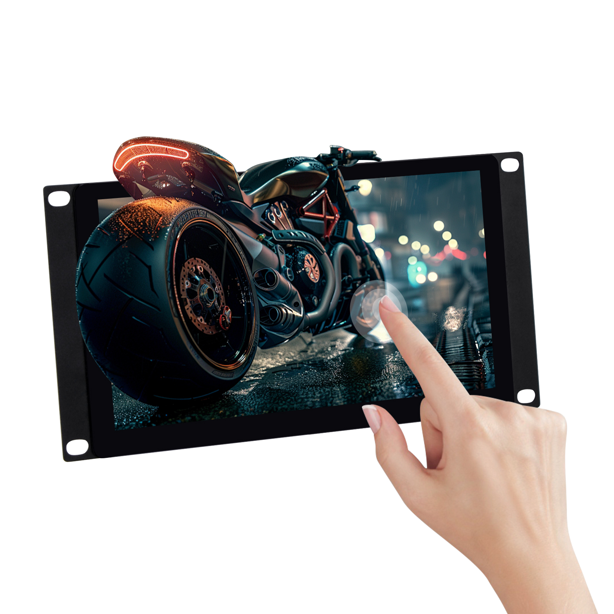
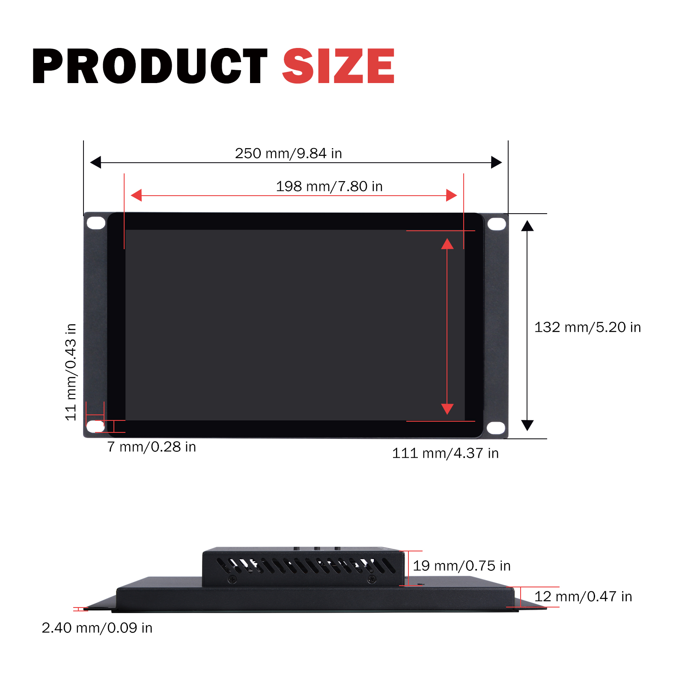
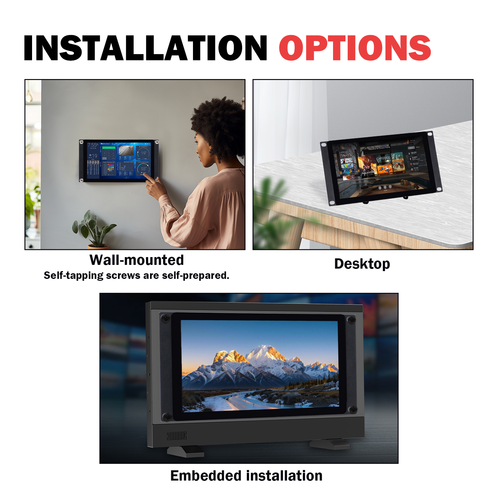
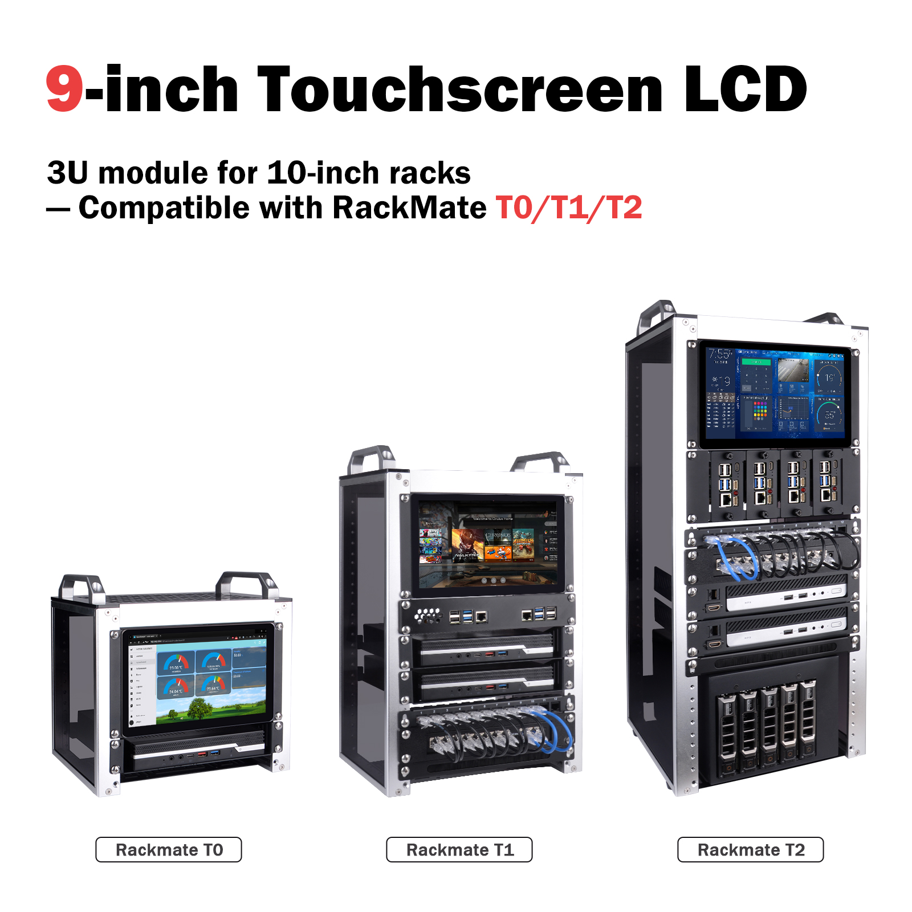
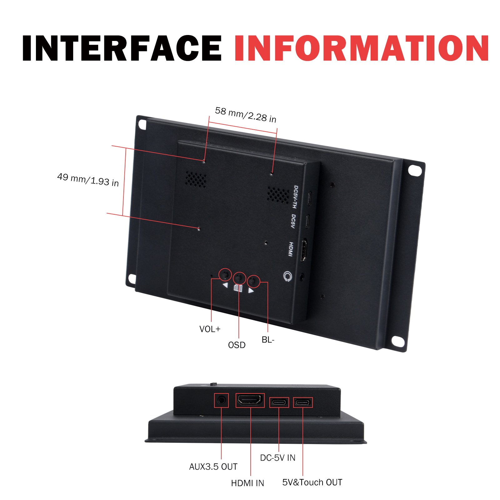
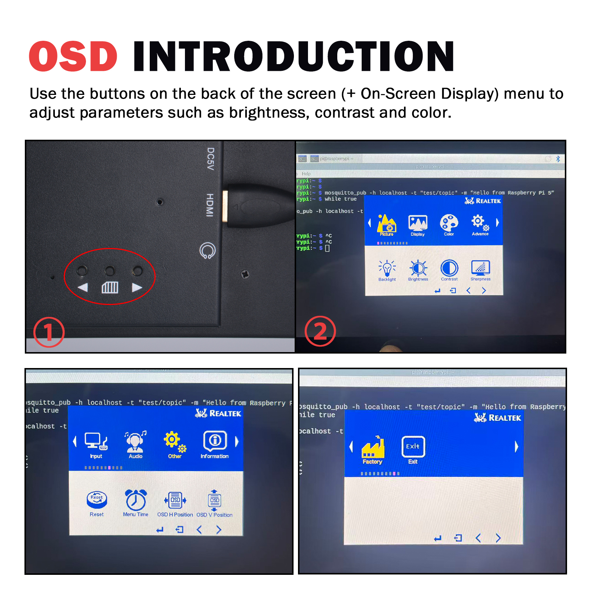
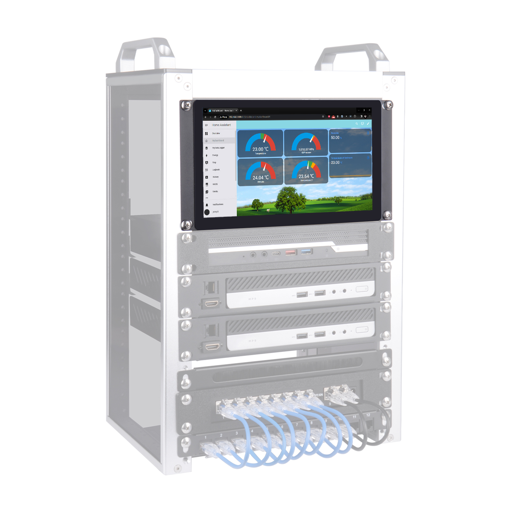
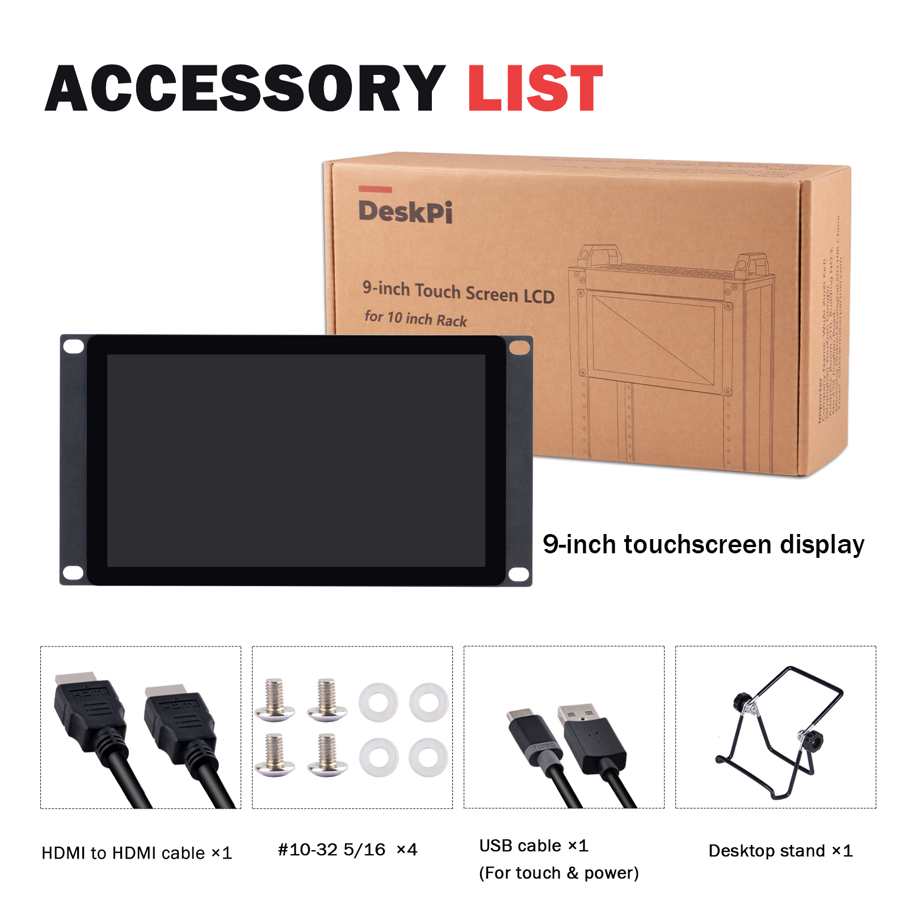
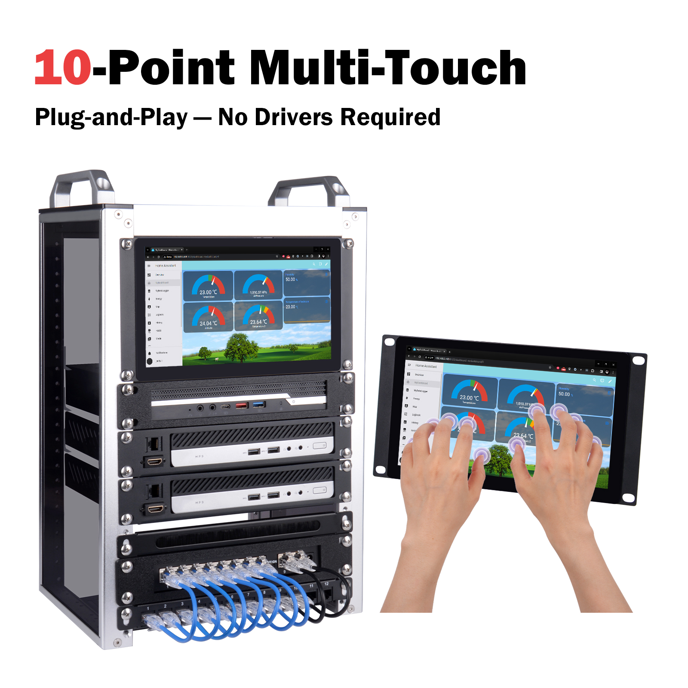

DeskPi 9-inch Touch Screen LCD Display
Product SKU
- Product Name: DeskPi 9-inch Touch Screen LCD Display
- SKU: DP-0100
Product Overview
The DeskPi DP-0100 is a 9-inch touch screen LCD display designed specifically for 10-inch racks, compatible with the DeskPi RackMate T0/T1/T2 series server cabinets. Featuring an industrial-grade design with high-resolution display, stable performance, and easy installation, it is ideal for server monitoring, maintenance data management, self-service terminals, HMI (Human-Machine Interface), and embedded applications.

Product Parameters
| Parameter | Specification |
|---|---|
| Model | Touch P9.0 |
| Size | 9 inches |
| Resolution | 1280 (H) × 720 (V) |
| Aspect Ratio | TFT 16:9 |
| Brightness | 500 cd/m² |
| Contrast Ratio | 800:1 |
| Display Colors | 16.7M |
| Viewing Angle | 178° |
| Response Time | 10 ms |

Touch Function
- Touch Screen: Capacitive 10-point touch
- Surface Hardness: ≥ 6H
- Transmittance: > 95%
- Touch Life: Over 100 million touches
Smart Features
- Auto Power-On: Automatically starts when power is connected
- Standby Mode: Automatically enters standby when no signal is detected
Installation Methods
Supports multiple installation methods: - Wall-mounting - Desktop - Embedded installation

⚠️ Important Note for macOS Users
Touch functionality on macOS devices requires additional drivers. By default, the touch screen will NOT respond to touch input on macOS, but the display function works normally.
This issue does NOT exist on Windows and Linux systems — touch and display work out of the box.
If you need to use the touch function on macOS, please contact DeskPi technical support or visit the Wiki for driver installation instructions.
Compatibility

Mainboard Function
| Function | Specification |
|---|---|
| Power Consumption | Low power, average < 10W |
| Power Input | DC 5V / 2A |
| Interfaces | Type-C1 (DC5V + Touch) / Type-C2 (DC5V) / HDMI / AUX 3.5mm |


Product Features
| Feature | Specification |
|---|---|
| Active Area | 198.912 (H) × 111.888 mm (V) |
| Dimensions | 249.97 × 132 × 34.5 mm |
| Operating Temperature | -10°C to +50°C |
| Storage Temperature | -15°C to +60°C |
| Relative Humidity | 5%–95% (non-condensing) |

Product List
The package includes the following accessories:
| Accessory | Quantity |
|---|---|
| 9-inch Touch Screen LCD Display | 1 unit |
| Desktop Stand | 1 piece |
| HDMI to HDMI Cable | 1 piece |
| USB Cable (for touch & power) | 1 piece |
| #10-32 5/16 Screws | 4 pieces |

Product Size
Front View Dimensions
| Dimension Parameter | Value |
|---|---|
| Overall Width | 250 mm / 9.84 in |
| Overall Height | 132 mm / 5.20 in |
| Display Area Width | 219 mm / 8.62 in |
| Display Area Height | 111 mm / 4.37 in |
| Active Display Width | 198 mm / 7.80 in |
| Mounting Hole Margin (Top/Bottom) | 11 mm / 0.43 in |
| Mounting Hole Margin (Left/Right) | 7 mm / 0.28 in |
Side View Dimensions
| Dimension Parameter | Value |
|---|---|
| Overall Thickness | 12 mm / 0.47 in |
| Protrusion Height | 19 mm / 0.75 in |
| Panel Thickness | 2.40 mm / 0.09 in |
Interface Information
Rear Interface Layout
| Interface / Button | Function Description |
|---|---|
| 5V & Touch OUT | 5V power and touch signal output |
| DC-5V IN | DC 5V power input |
| HDMI IN | HDMI video signal input |
| AUX 3.5 OUT | 3.5mm audio output |
| VOL+ | Volume increase button |
| BL- | Backlight adjustment button |
| OSD | Menu button |
OSD Menu Functions
Use the rear buttons (OSD menu) to adjust: - Brightness - Contrast - Color
Mounting Hole Positions
- Mounting hole spacing: 58 mm / 2.28 in (horizontal)
- Mounting hole to edge distance: 49 mm / 1.93 in (vertical)
10-Point Touch Demonstration
The DP-0100 supports 10-point capacitive multi-touch, enabling smooth multi-finger gesture operations for both rack-mounted and standalone use scenarios.

After-Sales Service
For technical support or any questions, please contact our customer service team:
| Contact Method | Information |
|---|---|
| sales@deskpi.com | |
| Official Website | www.deskpi.com |
| Wiki | wiki.deskpi.com |
Product Specifications Overview
Display Panel
| Item | Specification |
|---|---|
| Model | Touch P9.0 |
| Screen Size | 9 inches diagonal |
| Resolution | 1280 (H) × 720 (V) HD |
| Aspect Ratio | 16:9 |
| Brightness | 500 cd/m² |
| Contrast Ratio | 800:1 |
| Display Colors | 16.7 M |
| Response Time | 10 ms (typical) |
| Viewing Angle | 178° (H) / 178° (V) |
Touch Panel
| Item | Specification |
|---|---|
| Technology | Projected Capacitive, 10-point Multi-Touch |
| Surface Hardness | ≥ 6H |
| Transmittance | > 95% |
Mechanical Structure
| Item | Specification |
|---|---|
| Housing Material | Cold Rolled Steel |
| Active Display Area | 198.91 (H) × 111.88 (V) mm |
| Dimensions | 249.97 × 132 × 34.5 mm |
| Installation Methods | Wall-mount / Desktop / Embedded |
Electrical Parameters
| Item | Specification |
|---|---|
| Power Consumption | Average < 10W |
| Power Input | DC 5V / 2A |
| Interfaces | Type-C1 (DC5V+Touch) / Type-C2 (DC5V) / HDMI / AUX 3.5mm |
Environmental Parameters
| Item | Specification |
|---|---|
| Operating Temperature | -10°C to +50°C |
| Storage Temperature | -15°C to +60°C |
| Relative Humidity | 5%–95% (non-condensing) |
Operating System Compatibility
| Operating System | Display | Touch | Notes |
|---|---|---|---|
| Windows | ✅ Supported | ✅ Plug & Play | No additional drivers required |
| Linux | ✅ Supported | ✅ Plug & Play | No additional drivers required |
| macOS | ✅ Supported | ⚠️ Requires Additional Driver | Touch does NOT work by default; display works normally |
For macOS users: Please contact DeskPi technical support or visit wiki.deskpi.com to obtain the touch driver and installation instructions.
Package Contents
- [x] 9-inch Touch Screen LCD Display × 1
- [x] Desktop Stand × 1
- [x] HDMI to HDMI Cable × 1
- [x] USB Cable (for touch & power) × 1
- [x] #10-32 5/16 Screws × 4
- [x] User Manual × 1
Document Information
| Item | Content |
|---|---|
| Product Model | DP-0100 |
| Product Name | 9-inch Touch Screen LCD for 10 inch Rack |
| Brand | DeskPi |
| Official Website | www.deskpi.com |
| Wiki Documentation | wiki.deskpi.com |